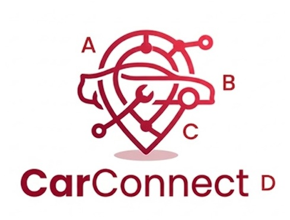

AutoCheck – Aplicación de diagnóstico vehicular

Solución digital enfocada en interpretar códigos OBD-II de manera sencilla, ayudando a los usuarios a entender las fallas de su vehículo y tomar mejores decisiones.
Ver detalleIngeniero Administrador de Sistemas con enfoque en procesos de negocio y tecnologías empresariales como SAP. Me interesa el desarrollo de soluciones que optimicen procesos y mejoren la experiencia del usuario.
Este sitio reúne tres proyectos que reflejan mi interés por la innovación, la mejora continua y el uso de la tecnología para resolver problemas reales en diferentes contextos.
Soy Ingeniero Administrador de Sistemas con interés en la tecnología y los procesos de negocio. Me gusta entender cómo funcionan las cosas, analizar problemas y encontrar soluciones prácticas que realmente generen valor. A lo largo de mi formación y experiencia, he desarrollado habilidades en análisis, organización y mejora de procesos, especialmente en entornos relacionados con sistemas empresariales como SAP. Me considero una persona proactiva, con iniciativa y con interés constante en aprender y mejorar. Además, tengo una visión a futuro orientada al emprendimiento, especialmente en el desarrollo de aplicaciones tecnológicas que resuelvan problemas reales. Me interesa crear soluciones digitales útiles, accesibles y con impacto en la vida cotidiana de las personas, combinando tecnología con ideas de negocio innovadoras.
Estos proyectos representan distintas áreas de interés: tecnología aplicada, procesos empresariales y mejora organizacional.
Solución digital enfocada en interpretar códigos OBD-II de manera sencilla, ayudando a los usuarios a entender las fallas de su vehículo y tomar mejores decisiones.
Ver detalle
Participación en actividades de soporte funcional en SAP SD, enfocadas en el análisis de incidencias y mejora de procesos comerciales.
Ver detalle
Aplicación digital que conecta usuarios con talleres mecánicos y refaccionarias cercanas, facilitando la contratación de servicios automotrices de forma rápida, segura y confiable.
Ver detalleA continuación se presenta una descripción más completa de cada proyecto, su propósito y el rol desempeñado.
AutoCheck es una propuesta de solución digital enfocada en la interpretación de códigos OBD-II, diseñada para usuarios sin conocimientos técnicos en mecánica y electrónica.
Participación en soporte funcional dentro del módulo SAP SD, enfocado en procesos de ventas y facturación.
Plataforma digital orientada a conectar usuarios con talleres mecánicos y refaccionarias cercanas, facilitando el acceso a servicios automotrices de forma rápida, segura y confiable.
Si deseas conocer más sobre mis proyectos o establecer contacto profesional, puedes comunicarte conmigo en:
martinmt.tovar@gmail.comGracias por visitar mi portafolio. Este espacio refleja mi interés en el desarrollo de soluciones tecnológicas y la mejora continua de procesos.